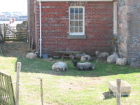

１:位置と分布
英領チャネル諸島はフランスのコタンタン半島西方沖合、英国海峡にある島々のことで、主にジャージー島、ガーンジー島、オルダニー島などで構成されています。
２:場所
地中海が近いので地中海性気候となっていて、一年を通して気温や降水量の変化が大きくないので観光としてはいつでも行きやすい。
３:人間と自然環境との相互依存関係
生花の栽培が盛んで、生花を利用した祭り「バトル・オブ・フラワーズ」が毎年8月に開催されている。
特にジャージー島では、上記のジャージー牛からとれるジャージー牛乳はこの島が発祥となっている。
４:空間的相互依存作用
英領チャネル諸島は第二次世界大戦中にドイツ軍に占領されたことによって南西部に建っていたコルビエ灯台が要塞化され、今もその痕跡の一部が残されている。
５:地域
入り組んで複雑な地形が多く見られ、海水の色がとても鮮やか。
SDGs
15 陸の豊かさも守ろう
ジャージー動物園は普通の動物園ではなく、シロテナガザルやボルネオオランウータンなどの野生では絶滅してしまいかねない動物を保護し、繁殖させることを目的としている。
海の中にぽつんと浮かんでいるように見える「エリザべス城」では、城内の環境変化を抑えるために羊を飼っている。